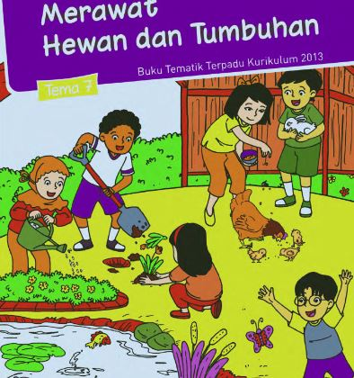

Skip navigation

SD Kelas 2 - Tematik 7
Dikembangkan oleh kelompok 4:
1.1 Ayo Membaca, oleh: Gading reno Sasmito
1.2 Ayo Mengamati, oleh: Dwiki Kurniawan
1.3 Ayo Latihan, oleh: Noval Luqman A
Kelas TI 4.2